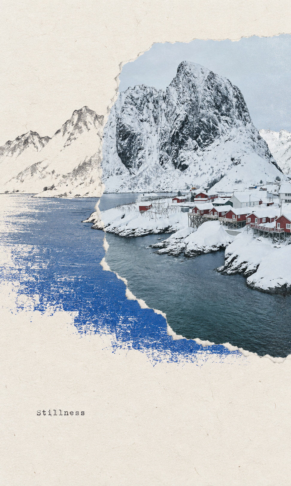
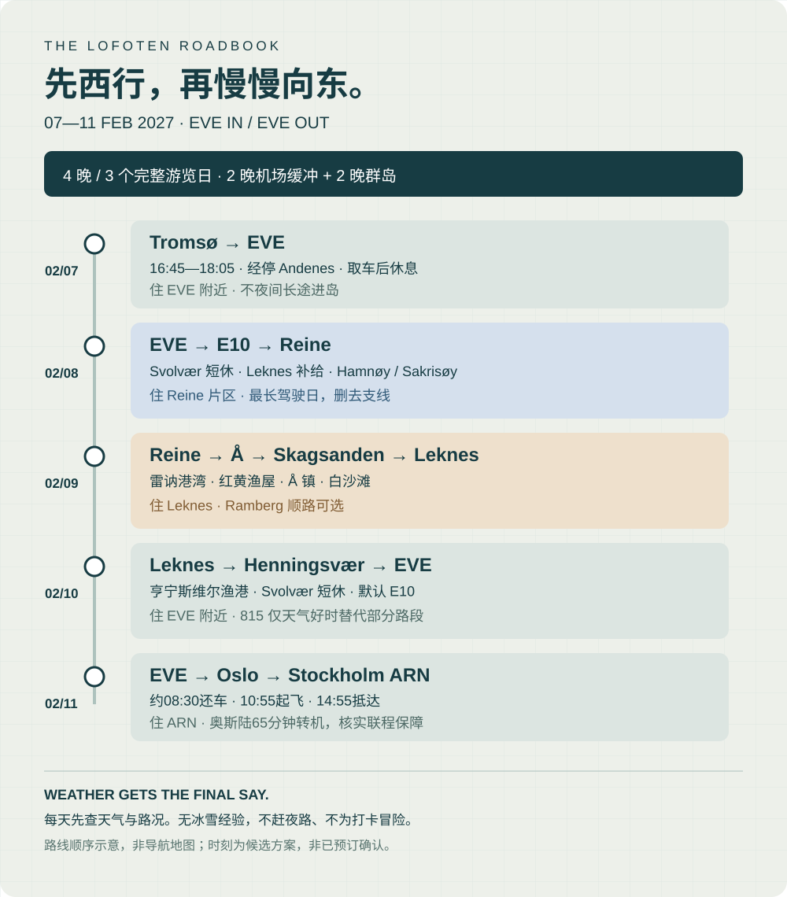
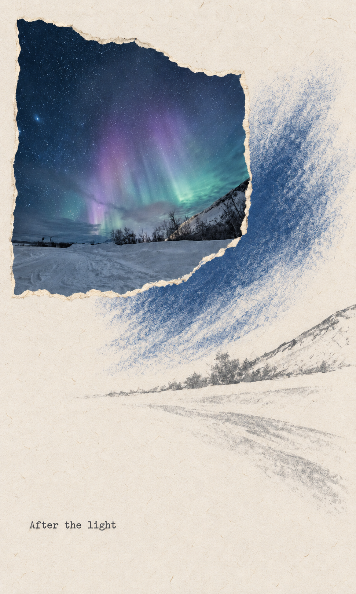

NORWAY / SWEDEN
A PERSONAL WINTER JOURNAL · 2027
A PERSONAL WINTER JOURNAL · 2027
北纬之冬
A winter, gathered.
把时间交给挪威。
在特罗姆瑟等一场极光，
沿罗弗敦的海岸，住进雪山与海之间。

LOFOTEN / WINTER STUDY
Hamnøy, Norway
雪山、渔屋与海目的地照片 · AI 拼贴
4 + 4 + 1
一段向北的冬日旅程
Tromsø
特罗姆瑟 · 4 晚，最后一晚待补
Lofoten
EVE 往返 · 4 晚 / 3 个完整游览日
Arlanda
机场酒店 · 1 晚缓冲
THE ROUTE / 01
向北出发，
慢一点停留。
城市只作短暂停靠。把完整的白昼留给海岸，把夜晚留给极光，也把空白留给天气。
两人同行，2 月 2 日晚从上海出发，经迪拜于 2 月 3 日抵达奥斯陆，再衔接前往特罗姆瑟；抵达 EVE 后取车。最后提前一晚抵达阿兰达机场，2 月 13 日返回上海。
-
上海 → 迪拜 → 奥斯陆00晚
2/2 晚出发 · 2/3 12:10 抵达 OSL，仅转机 -
特罗姆瑟 Tromsø04晚
02.03 — 02.07 · 城市、峡湾与追光 -
罗弗敦 Lofoten04晚
02.07 — 02.11 · EVE 同地取还，先西行再折返 -
阿兰达机场 Arlanda01晚
02.11 — 02.12 · 机场酒店 → 上海

飞行衔接罗弗敦自驾
Tromsø 4 晚 → EVE 1 晚 → Reine 1 晚 → Leknes 1 晚 → EVE 1 晚 → ARN 1 晚。罗弗敦核心区域实际住 2 晚。
路线图不按比例；不同颜色标出每天去向，不代表实际道路走向。导航须结合实时道路与天气。
行程成立的前提 · 2/3 当天抵达 TOS，2/7 18:05 飞抵 EVE，2/11 当天抵达 ARN。国际航程按提供的行程单编排；三段北欧航班与租车仍待落实，再锁定不可取消住宿。查看国际航程 ↗
MOMENTS THAT MATTER
值得为之，走得更远。
每天一件真正期待的事。
余下的时间，不必填满。

01 / TROMSØ
把第一场极光，
把第一场极光，
交给当地向导。
第二晚安排追光小团，后两晚保留天气窗口。不承诺看见，但给相遇留出余地。
西部住一晚，看两次光线
2/8 住 Reine / Sakrisøy / Hamnøy 一晚。当天未拍完的红渔屋、黄房子与港湾，留到 2/9 上午补看；2/9 晚推进至 Leknes。
DAY 07 · 西部渔村 ↗海岸不是一张打卡清单
优先保留 Å、Skagsanden 与 Henningsvær。Ramberg 顺路短停，815 仅在天气与时间合适时选走；Nusfjord、Haukland 不列必去。
DAY 08 · 海岸与返程 ↗目的地参考：Visit Tromsø · 狗拉雪橇 / 极光与季节说明。照片为目的地影像，不代表出行当日天气或保证可见的景象。
NEXT CHAPTER / 02 十天，慢慢展开THE DAILY JOURNAL / 02
十天，慢慢展开。
点击日期切换当天行程。每天保留一个主体验和一套天气备选；所有时间均为当地时间，具体活动以实际预订为准。
01 / 10
一眼看完 · 十天行程总表
02.03奥斯陆 OSL（12:10抵达） → 特罗姆瑟 TOS（航班待订） → Nyholmen 公寓（已确认住宿）Tromsø · Nyholmen 公寓 / 已确认
02.04Tromsø 港口（白天） → 市区 / 北极大教堂周边（二选一） → 当地向导极光团（场次待订）Tromsø · Nyholmen 公寓 / 已确认
02.05Kvaløya 峡湾（导览待订） → Sommarøy（向导按路况决定） → Tromsø（住宿）Tromsø · Nyholmen 公寓 / 已确认
02.06Tromsø 新住宿（寄存 / 待订） → 狗拉雪橇营地（按所订运营方） → Tromsø（住宿）Tromsø · 第4晚住宿待补
02.07特罗姆瑟机场 TOS（交通） → Andenes ANX（经停20分钟） → Evenes机场 EVE（取车） → EVE机场附近（住宿）EVE 机场附近 · 2/7—2/8
02.08EVE机场附近（出发） → Svolvær / Kabelvåg（休息） → Leknes（补给） → Hamnøy（量力短停） → Sakrisøy（量力短停） → Reine片区（住宿）Reine / Sakrisøy / Hamnøy · 2/8—2/9
02.09Reine（核心） → Å镇（核心） → Sakrisøy / Hamnøy（补拍） → Ramberg（顺路可选） → Skagsanden Beach（核心） → Leknes（住宿）Leknes 镇区 · 2/9—2/10
02.10Leknes（出发） → E10（默认主路） → 815公路（仅天气好替代部分路段） → Henningsvær（核心） → Svolvær（短休） → EVE机场附近（住宿）EVE 机场附近 · 2/10—2/11
02.11EVE机场（还车 / 10:55起飞） → 奥斯陆 OSL（12:45到 / 13:50走） → 斯德哥尔摩 ARN（14:55到） → ARN机场酒店（住宿）ARN 阿兰达机场酒店 · 2/11—2/12
02.12ARN（15:00起飞） → DXB（次日00:25到 / 03:10走） → PVG（2/13 15:05抵沪）机上 · 2/13 15:05 抵沪
PLACES TO STAY & WAYS TO GO / 03
住在风景里。
共九晚：Tromsø 4 晚 + EVE 2 晚（分两次）+ Reine 1 晚 + Leknes 1 晚 + ARN 1 晚。除已确认的特罗姆瑟三晚外，其余均为建议位置，不代表已订。
THE STAY TO REMEMBER / 08–09 FEB
窗外是雪山，
认识 Hamnøy ↗
窗外是雪山，
今晚不赶路。
2/8—2/9 在 Reine / Sakrisøy / Hamnøy 三处中选择一晚。优先供暖、独立卫浴、厨房、停车、可取消和方便抵达；2/9 晚改住 Leknes。
景观房不是唯一标准：确认行李搬运距离、冰雪步道、晚到入住方式，以及餐厅是否营业。保留可自己做一顿饭的余地。
01
西部渔屋一晚
¥2,000–3,500
每间 / 每晚 · 双人预算目标
Tromsø · Nyholmen
2/3—2/6 三晚：用户已确认预订 Nyholmen 公寓。2/6—2/7 一晚待补，优先同区域或市中心；活动集合、晚归交通和换房行李寄存需确认。
¥1,600–2,500 / 间 / 晚
酒店官网参考 ↗EVE 两端 · Leknes 中间
2/7—2/8、2/10—2/11 各住 EVE 机场附近一晚，避免夜间长途与早晨赶机；2/9—2/10 住 Leknes 镇区一晚。机场附近也需核实实际接驳与停车。
¥1,100–2,200 / 间 / 晚
Leknes 位置参考 ↗Arlanda 机场
优先比较 SkyCity 的 Clarion Hotel Arlanda Airport 或 Radisson Blu Airport Terminal Hotel。不要与需要接驳的 Arlandia 混淆。
¥1,200–1,800 / 间 / 晚
官方机场酒店一览 ↗
4
Tromsø
2
EVE · 分两次
1
Reine 周边
1
Leknes
1
ARN
价格均为双人房预算目标，不是实时报价。Tromsø 2/3—2/6 为用户确认已订；其他住宿待订。别人的 Reinefjorden Sjøhus 拼房截图不属于本行程订单。
CONNECTING THE JOURNEY
先把衔接，安排妥当。
国际航程已有行程单。接下来优先落实三段北欧航班，再订车、住宿与活动。
两个人，一路向北。
EMIRATES · 经济舱 · 2 人出行上海出发 2027.02.02 — 返回 2027.02.13 · 欧洲当地行程 02.03—02.12，10 天 9 晚。
以下按提供的行程单整理，所有起降时间均为所在机场当地时间。
OUTBOUND / 去程 · 02—03 FEB
23:00PVG · 上海浦东T2 · 2 月 2 日
05:10 +1DXB · 迪拜T3 · 2 月 3 日
迪拜转机 2 小时 25 分钟 · 行程单所列均为 T3
07:35DXB · 迪拜T3 · 2 月 3 日
12:10OSL · 奥斯陆2 月 3 日抵达
HOMEBOUND / 返程 · 12—13 FEB
15:00ARN · 阿兰达T5 · 2 月 12 日
00:25 +1DXB · 迪拜T3 · 2 月 13 日
迪拜转机 2 小时 45 分钟 · 行程单所列均为 T3
03:10DXB · 迪拜T3 · 2 月 13 日
15:05PVG · 上海浦东T2 · 2 月 13 日
+1 表示次日。航站楼与时刻仍需出发前复核；两位旅客分别核对自己的机票及行李额度。行程单未列出 OSL → TOS 等北欧段，不视为已包含或已预订。接上抵达日行程 ↗
NORDIC CONNECTIONS / 北欧段衔接
OSL → TOS
EK159 12:10 抵达 OSL 后衔接，当晚入住特罗姆瑟。此段未列于行程单，须另行落实；留足入境、行李处理、重新托运与值机时间，不按最短转机时间冒险安排。
班次待确认TOS → EVE · WF867
2/7 16:45—18:05，经停 Andenes 20 分钟。用户截图 ¥569/人，显示托运 2×23kg、手提 8kg；免费退改与实际出票需核实，不视为已订。
候选 · 截图价EVE 同地取还
计划 2/7 约19:00取、2/11 约08:30还。Yaris Cross 4×4 自动或同级截图价 3,339.61 NOK/车；截图未展示地点与日期，仍需统一时段、保险、冬季胎、四驱组别与门店营业时间。
条件待核实EVE → OSL → ARN
2/11 10:55—12:45，OSL 中转65分钟；13:50—14:55抵达 ARN。用户截图 ¥1,159/人，托运23kg、手提8kg、显示行李直达。确认联程误机保障后再购票。
候选 · 未订ARN T5 → DXB → PVG T2
按行程单乘 EK158 于 15:00 起飞，迪拜衔接 EK302，2/13 15:05 抵沪。前一晚住机场，不安排出发当天进城。
据国际行程单
LOFOTEN / A FOUR-NIGHT ROADBOOK
EVE 往返，先西行，再逐步向东。
07 FEB
EVE
18:05 抵达
取车后住机场附近，不夜间长途进岛。
08 FEB
Reine
E10 西行约4.5—5小时起
沿途休息，抵达后量力看 Hamnøy / Sakrisøy。
09 FEB
Leknes
Reine → Å → Skagsanden
向东推进；不安排冬季登山。
10 FEB
EVE
Henningsvær → Svolvær → EVE
815仅可选；最后一晚回机场附近。
驾驶员有日常驾驶经验，但无冰雪路面经验。行前安排正规冬季驾驶学习或评估；四驱不缩短冰面刹车距离。若无法安全胜任或遇预警，删点、调整住宿，改接送或导览，不硬走这条长途路线。
THE TRAVEL ENVELOPE / 04
为体验留余量。
两人同行，住宿与租车均摊。以下为每人人民币规划金额，不含国际往返机票；可按实际报价直接修改，自动保存于当前浏览器。
当前交通参考 · 两人约 ¥5,841
¥1,138TOS → EVE · ¥569 × 2
¥2,318EVE → ARN · ¥1,159 × 2
≈ ¥2,385租车 3,339.61 NOK / 车
按用户提供截图整理，不是实时库存或已付款金额。租车截图未展示日期和地点，暂按 EVE 同地取还假设；1 NOK≈¥0.714仅作参考。小计不含 OSL→TOS、住宿、油费、停车、额外保险或装备，不可当成全程预算。
Tromsø 4晚 + EVE 2晚 + Reine 1晚 + Leknes 1晚 + ARN 1晚。
TOS→EVE ¥569 + EVE→ARN ¥1,159/人（截图参考）；另加尚未定价的 OSL→TOS。
EVE 同地取还，截图租金折合约 ¥1,192/人；日期、保险和冬季装备未核实，预算另留余量。
机场接送、燃油、停车等。
核心活动优先，额外追光按天气与体力决定。
当地热餐、咖啡与部分渔屋自炊。
独立预留，不把它当作活动消费额度。
国际与北欧段分开记账。 提供的国际行程单未列 OSL → TOS，该段仍保留在境内航班预算中。两人同行不代表两张客票的票价与行李条款一定相同，最终按各自实际支出核算。
SPEND WITH INTENTION
三件更值得花钱的事。
位置与睡眠
靠近集合点的酒店、位置方便的渔屋、返程前机场住宿，比赶路多打一处卡更有价值。
可靠的当地向导
把追光与冬季户外判断交给熟悉当地的人；核对服务内容、取消规则与实际集合方式。
可调整的余地
机票保障、可取消房型和机动资金，能让一场风雪不至于拖累整趟旅行。
THE FIELD GUIDE / 05
准备妥当，然后出发。
好的计划不是把每天填满，而是知道什么必须提前安排，什么可以交给当天的天气。
让天气拥有最后一票。
出发前与每天查看预警、道路、航班和活动运营通知。白昼、风力和结冰状况，比“导航还能到达”更重要。
阴天 / 小雪
减少停靠点，留在村落和咖啡馆；别把阴天等同于安全，仍须查风力与道路。
强风 / 预警
取消暴露海岸支线与非必要驾驶。联系活动方和酒店，以官方指引为先。
航班取消
先联络航司处理整程，再联系租车与住宿。保存官方通知和凭据，核对自己的票务与保险条款。
没有极光
保留一次机动尝试，而不是连续透支睡眠。雪山、海湾与渔村仍是这趟旅程的主角。
轻装，但不省掉必要装备。
穿在身上
保暖内层、抓绒或羊毛中层、防风防水外层；保暖防水冬靴、帽子、围巾与两副手套。合适的防滑鞋套用于结冰路面。
放进日用包
保温水、简单食品、备用电池、充电线、常用药、头灯与反光物品。手机与相机备电贴身保暖。
提前离线保存
机票、住宿地址、活动集合点、租车合同、保险、离线地图和运营方联系方式；敏感证件不放在公开网页中。
留一顿饭的灵感
特罗姆瑟吃热鱼汤，罗弗敦留意当地鳕鱼料理，渔屋里煮一顿简单晚餐。餐厅开放、菜单与预订情况临近确认。
冬季装备与道路建议参考 Visit Lofoten。
BOOKING CHECKLIST
预订，一件件确认。
建议先查三段航班，再订车与住宿。
勾选只表示你已自行确认，不会触发预订。
0 / 13 已完成
预算与勾选保存在当前浏览器，不跨设备同步。清理浏览器数据后可能丢失。
官方查询与资料入口 ↗
- Avinor · 奥斯陆转机
- Widerøe · 航班查询
- Avinor · EVE 机场
- Swedavia · ARN 酒店
- Visit Tromsø · 月度体验
- Visit Tromsø · 极光与观鲸季节
- Visit Lofoten · 冬季指南
- Visit Lofoten · Reinebringen 安全提示
资料核查于 2026.10.13；2027 年航班、房态、活动与开放时间仍以出发前官方信息和实际预订为准。